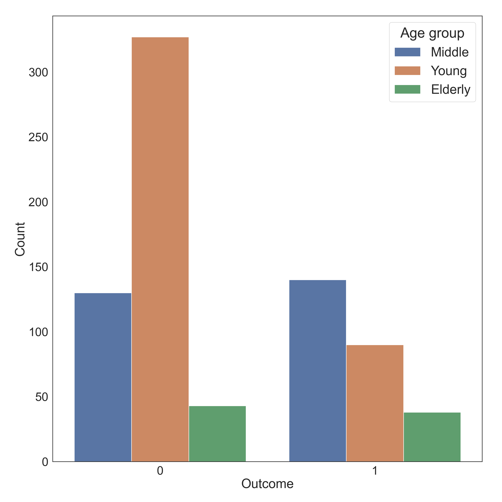
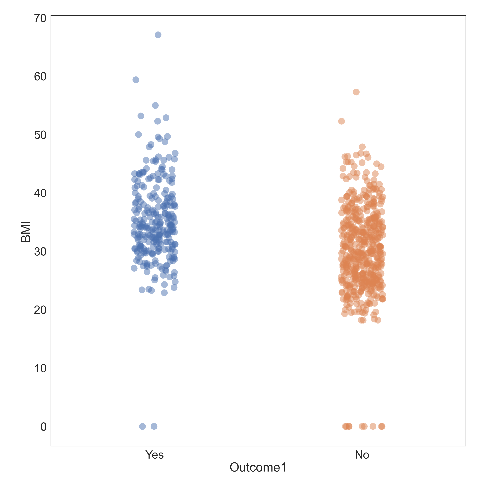
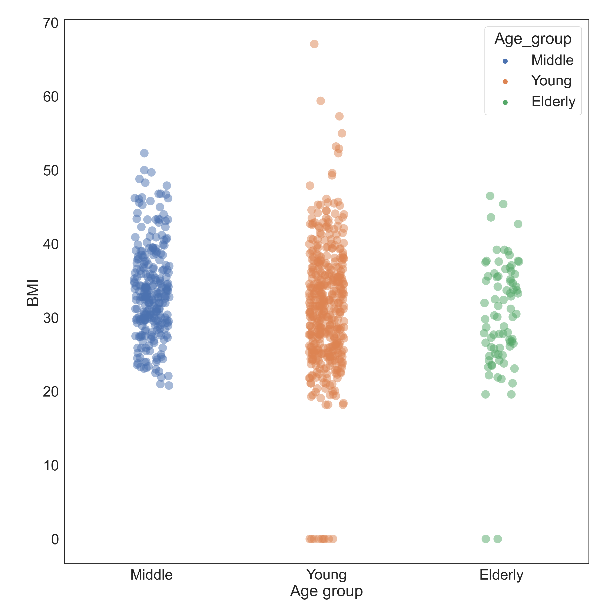
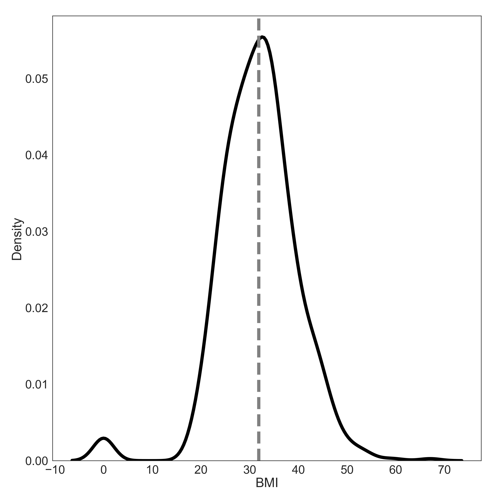
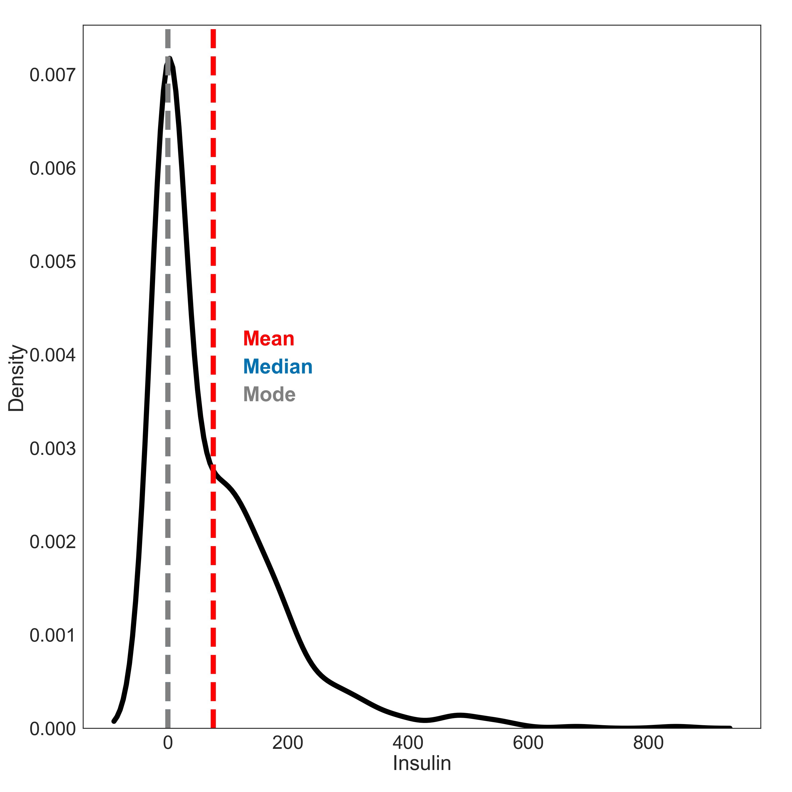
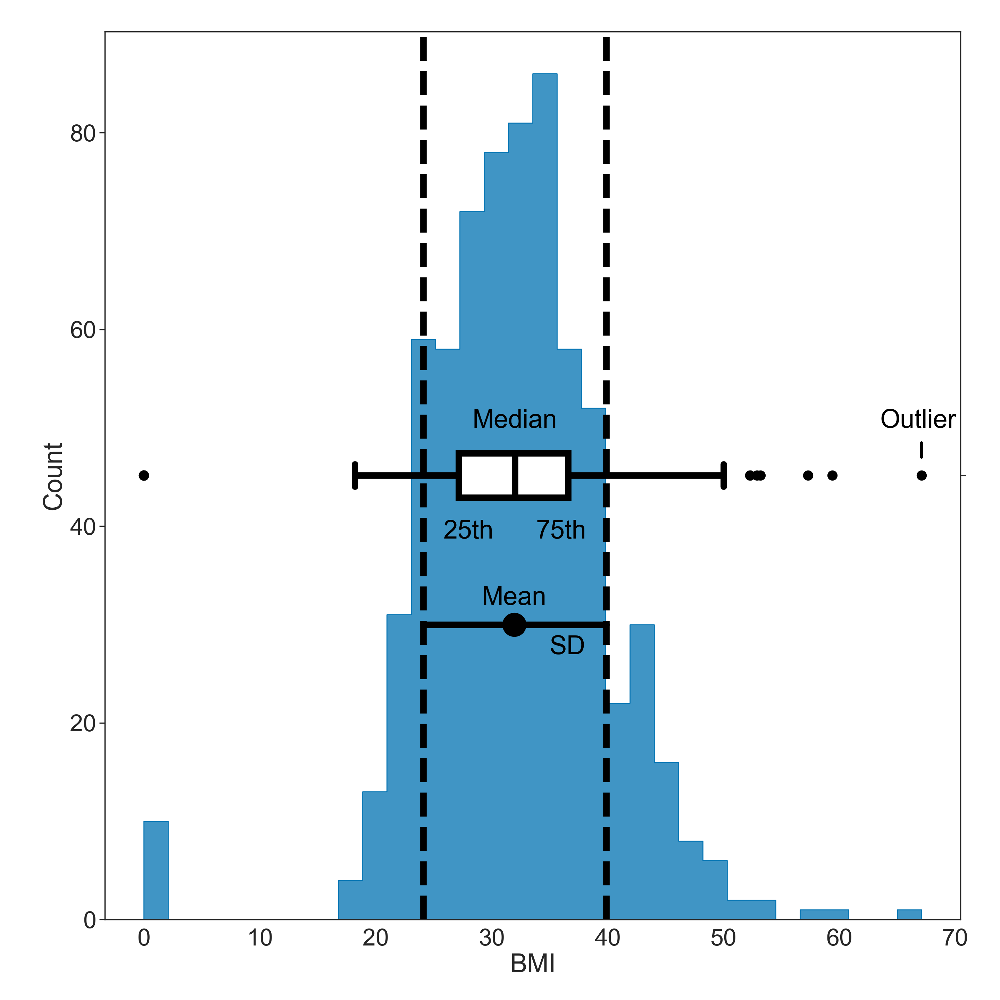
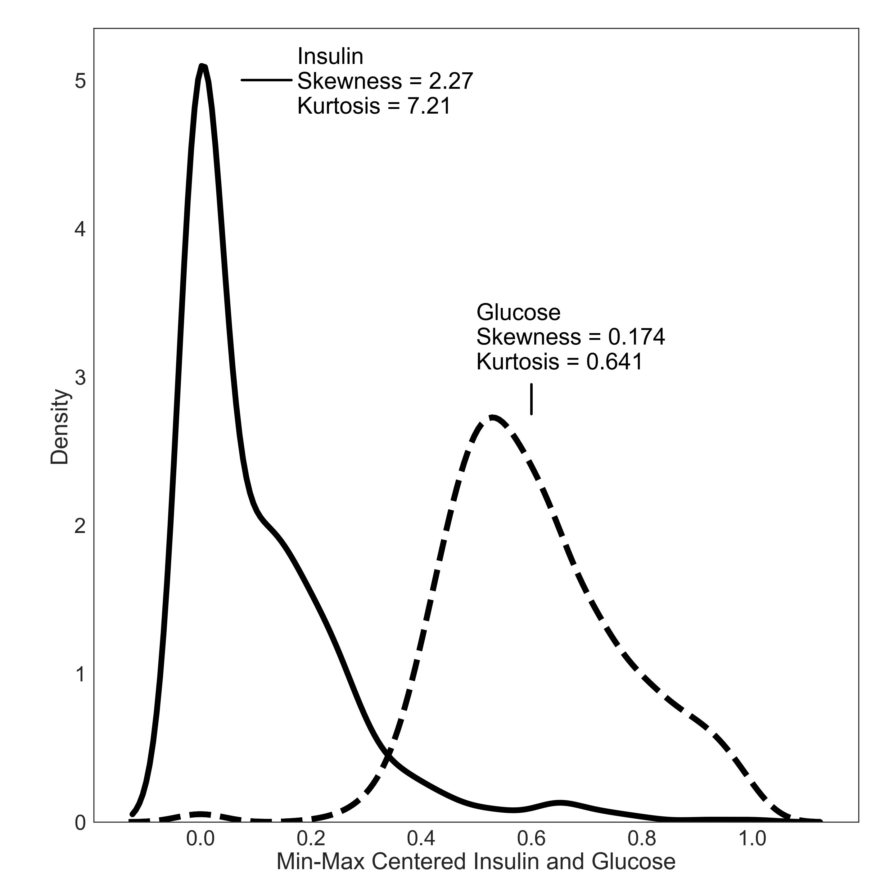
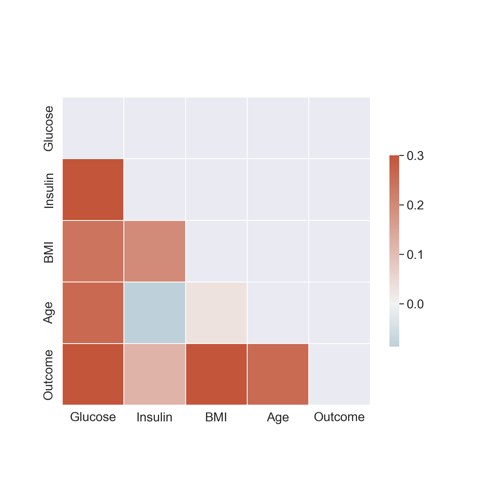

Introduction

Exploratory data analysis is an essential first step towards determining the validity of your data and should be performed throughout the data pipeline. However, EDA is often performed too late or not at all. The Python programming language, is a widely used open source platform for data analysis and data visualization. This is because of the variety of libraries available and attentive community devoted to data analysis.
Here, we utilize the pandas and pandas-profiling libraries to conduct preliminary exploratory data analysis aimed at diagnosing any major issues with an imported data set. pandas and pandas-profiling offers a clean and straightforward methodology to uncover issues such as data outliers, missing data, as well as summary statistical reports.
What is Exploratory Data Analysis?
Exploratory data analysis is a statistical, approach towards analyzing data sets to investigate and summarize their main characteristics, often through statistical graphics and other data visualization methods.
What are Some Important Data Set Characteristics?
There are several characteristics that are arguably important, but we will only consider those covered in this workshop series. Let’s start with the fundamentals that will help guide us.
Diagnostics
When importing data sets, it is important to consider characteristics about the data columns, rows, and individual cells.
Variables
Name of each variable
Pregnancies Glucose BloodPressure ... Age Outcome Age_group
0 6 148 72 ... 50 1 Middle
1 1 85 66 ... 31 0 Middle
2 8 183 64 ... 32 1 Middle
3 1 89 66 ... 21 0 Young
4 0 137 40 ... 33 1 Middle
[5 rows x 10 columns]Types
Data type of each variable
Pregnancies int64
Glucose int64
BloodPressure int64
SkinThickness int64
Insulin int64
BMI float64
DiabetesPedigreeFunction float64
Age int64
Outcome int64
Age_group object
dtype: objectNumerical: Continuous
Measurable numbers that are fractional or decimal and cannot be counted (e.g., time, height, weight)

Numerical: Discrete
Countable whole numbers or integers (e.g., number of successes or failures)

Categorical: Nominal
Labeling variables without any order or quantitative value (e.g., hair color, nationality)

Categorical: Ordinal
Where there is a hierarchical order along a scale (e.g., ranks, letter grades, age groups)

Missing Values (NAs)
Cells, rows, or columns without data
Missing percent: percentage of missing values * Unique count: number of unique values.
Unique rate: rate of unique value - unique count / total number of observations.
Pregnancies Glucose BloodPressure ... Outcome Age_group Outcome1
0 NaN 148.0 NaN ... 1.0 Middle Yes
1 1.0 85.0 66.0 ... 0.0 NaN No
2 8.0 183.0 64.0 ... NaN Middle Yes
3 1.0 89.0 66.0 ... 0.0 Young No
4 0.0 137.0 40.0 ... NaN Middle Yes
[5 rows x 11 columns]Summary Statistics
Above we described some properties of data. However, you will need to know some descriptive characteristics of your data before you can move forward. Enter, summary statistics.
Summary statistics allow you to summarize large amounts of information about your data as quickly as possible.
Central Tendency
Measuring a central property of your data. Some examples you’ve probably heard of are:
Mean: Average value
Median: Middle value
Mode: Most common value

Notice that all values of central tendency can be pretty similar in this figure.

However, in this figure, all measures are different. This will be important when we discuss statistical dispersion in chapter 3.
Statistical Dispersion
Measure of data variability, scatter, or spread. Some examples you may have heard of:
Standard deviation (SD): The amount of variation that occurs in a set of values.
Interquartile range (IQR): The difference between the 75th and 25th percentiles
Outliers: A value outside of \(1.5 * IQR\)

Distribution Shape
Measures of describing the shape of a distribution, usually compared to a normal distribution (bell-curve)
Skewness: The symmetry of the distribution
Kurtosis: The tailedness of the distribution

Statistical Dependence (Correlation)
Measure of causality between two random variables (statistically). Notably, we approximate causality with correlations (see correlation \(\neq\) causation)
- Numerical values, but you can compare numericals across categories (see the first plot above).
